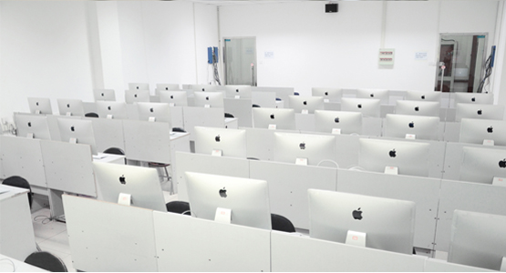

把 握 移 动 端 字 体 设 计 的 七 大 准则
更新时间:2020年06月06日17时26分 来源:问答精灵

- 留足空间，字体并非弯弯曲曲的线条排列，它主要在于周围和相互间的空间。
- 行宽是一行文字的长度，是一行文字的理想长度，因为很难让每一行都精确吻合。
- 行距是行之间的空间，行距太紧凑，会让视线难以从行尾扫视到下一行首。
- 所有字体至少都有一种最佳状态，使字体在浏览器中最能保持字形的抗锯齿选项。
- 你读的多数内容是居左对齐，且右边沿参差不齐，这样看起来更有节奏。
- 增强文字与背景对比的同时，我们也要减少不同层次文字间的反差。
- 按比例调整字间距，为移动端调整字号时，要意识到字间距发生了必要的变化。
原文链接：http://www.baidu.com 文章分类:艺术设计